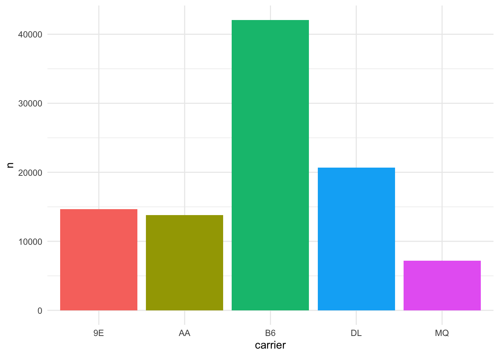
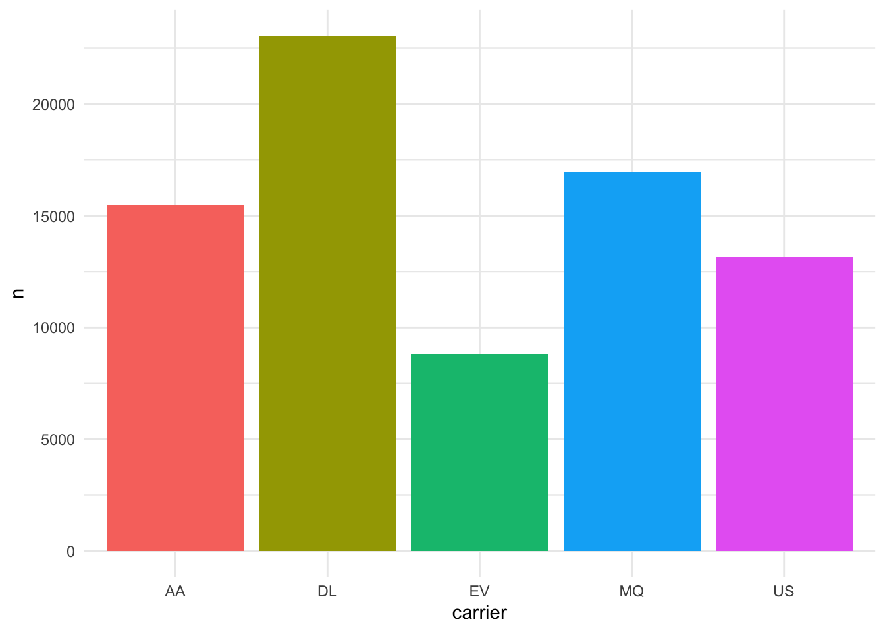
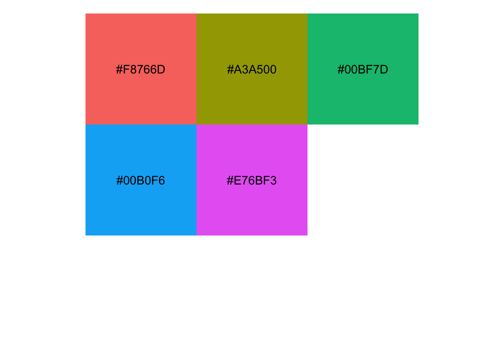
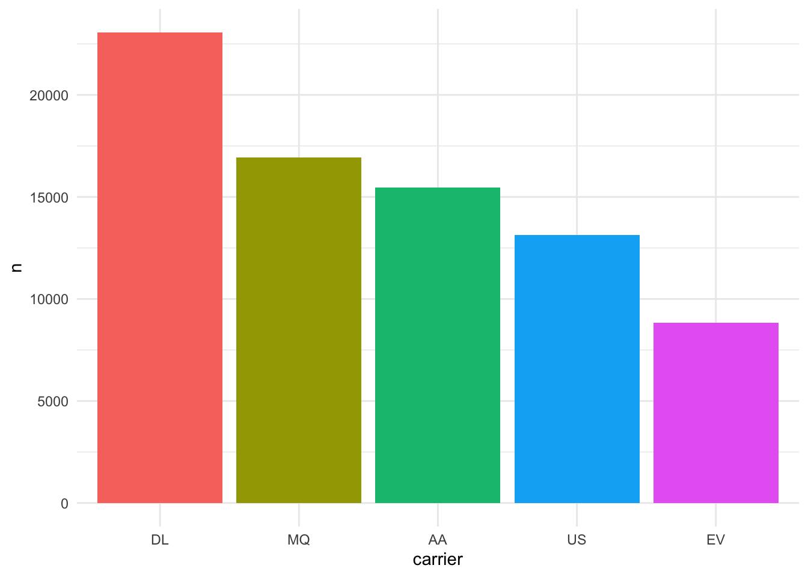
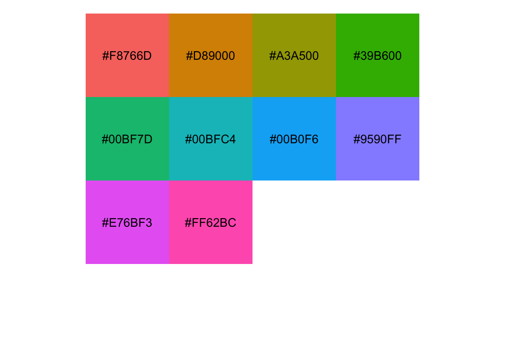
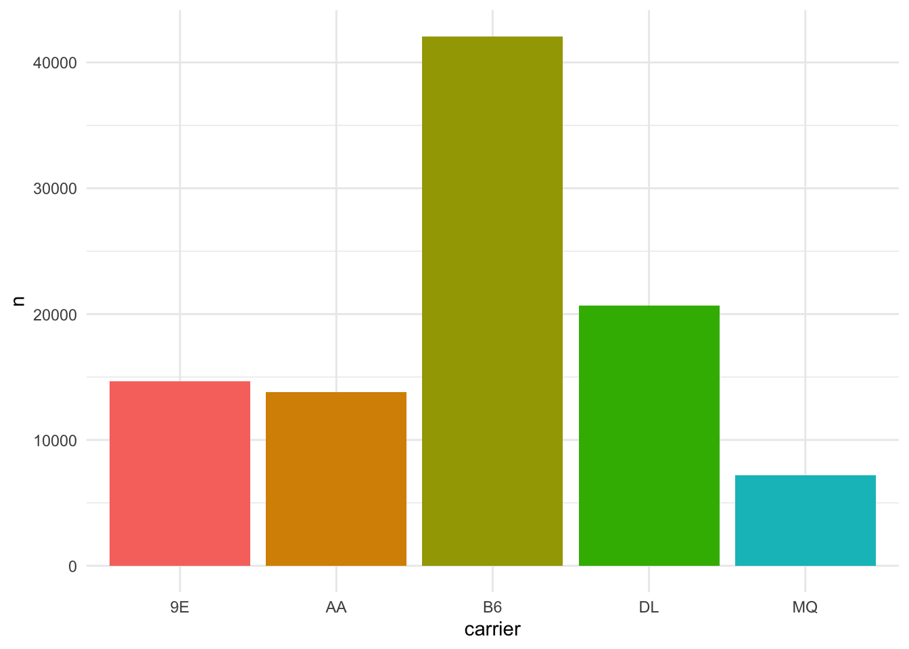
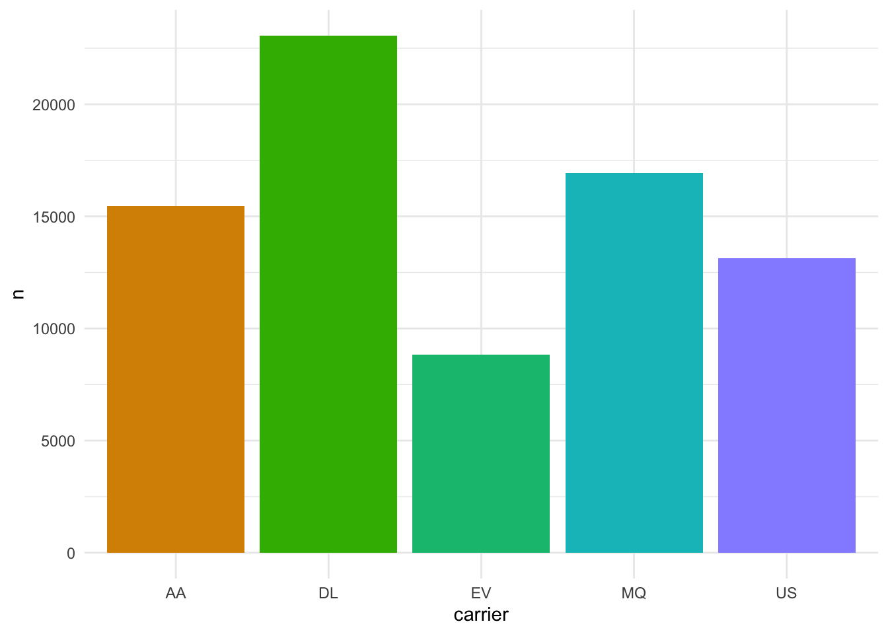
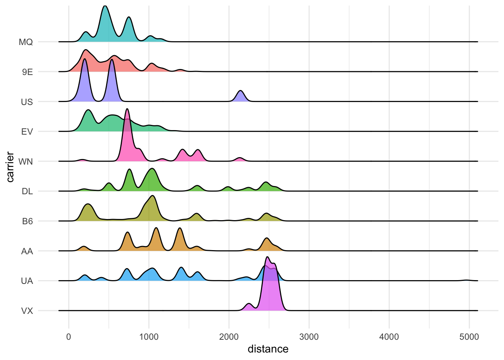

library(tidyverse)
library(nycflights13)
library(scales)
library(ggridges)在用 ggplot2 绘图的时候，经常会遇到一个问题：同样的类别在不同的图表里渲染出来的颜色不一样。
比如要画两张图，图一比较的是中日韩三国的 GDP 增长率，图二比较的是中美日三国的 GDP 增长率，但是默认的配色方案下，中国在图一中可能用红色表示，到图二又变成了蓝色表示。
颜色是重要的视觉编码，为了不让人产生误解，同样的类别自然需要统一颜色。这里记录一下这类问题解决的方法和思路。
首先载入本文将要用到的包。
本文将使用 Hadley Wickham 贡献的 nycflights13 数据集，该数据集包含了纽约市三大机场的 33 多万条航班飞行数据。
来看看 nycflights13::flights 数据集的具体信息：flights 中的每行数据都表示一次航班的飞行情况，变量包括航班的起飞降落时间、起始地、目的地、航班号、延迟时间等等。
knitr::kable(head(flights))| year | month | day | dep_time | sched_dep_time | dep_delay | arr_time | sched_arr_time | arr_delay | carrier | flight | tailnum | origin | dest | air_time | distance | hour | minute | time_hour |
|---|---|---|---|---|---|---|---|---|---|---|---|---|---|---|---|---|---|---|
| 2013 | 1 | 1 | 517 | 515 | 2 | 830 | 819 | 11 | UA | 1545 | N14228 | EWR | IAH | 227 | 1400 | 5 | 15 | 2013-01-01 05:00:00 |
| 2013 | 1 | 1 | 533 | 529 | 4 | 850 | 830 | 20 | UA | 1714 | N24211 | LGA | IAH | 227 | 1416 | 5 | 29 | 2013-01-01 05:00:00 |
| 2013 | 1 | 1 | 542 | 540 | 2 | 923 | 850 | 33 | AA | 1141 | N619AA | JFK | MIA | 160 | 1089 | 5 | 40 | 2013-01-01 05:00:00 |
| 2013 | 1 | 1 | 544 | 545 | -1 | 1004 | 1022 | -18 | B6 | 725 | N804JB | JFK | BQN | 183 | 1576 | 5 | 45 | 2013-01-01 05:00:00 |
| 2013 | 1 | 1 | 554 | 600 | -6 | 812 | 837 | -25 | DL | 461 | N668DN | LGA | ATL | 116 | 762 | 6 | 0 | 2013-01-01 06:00:00 |
| 2013 | 1 | 1 | 554 | 558 | -4 | 740 | 728 | 12 | UA | 1696 | N39463 | EWR | ORD | 150 | 719 | 5 | 58 | 2013-01-01 05:00:00 |
现在的任务是：分别找到三大机场执飞数量排名前五的航空公司，并用柱状图表示出来。
数据集中我们将使用到的是变量是 carrier 和 origin。carrier 表示当次航班所属航空公司的代码，origin 表示航班起飞的机场。
# 查看航空公司
knitr::kable(flights %>% count(carrier, sort = TRUE))| carrier | n |
|---|---|
| UA | 58665 |
| B6 | 54635 |
| EV | 54173 |
| DL | 48110 |
| AA | 32729 |
| MQ | 26397 |
| US | 20536 |
| 9E | 18460 |
| WN | 12275 |
| VX | 5162 |
| FL | 3260 |
| AS | 714 |
| F9 | 685 |
| YV | 601 |
| HA | 342 |
| OO | 32 |
# 查看航班起飞机场
knitr::kable(flights %>% count(origin, sort = TRUE))| origin | n |
|---|---|
| EWR | 120835 |
| JFK | 111279 |
| LGA | 104662 |
由于航空公司过多，我们筛选出执飞数量最多的十家航空公司进行分析。
# 得到执飞次数最多的十家公司
top10Carrier <- flights %>%
count(carrier, sort = TRUE) %>%
top_n(10, n)
# 用semi_join()过滤出这十家航空公司的数据
flights_sample <- flights %>%
semi_join(top10Carrier, by = "carrier") %>%
# 将carrier从字符串变成因子，方便后续分析
mutate(carrier = as.factor(carrier))下面得到 JFK 机场执飞数排名前5的航空公司，并且用柱状图表示。
JFK_flights <- flights_sample %>%
filter(origin == "JFK") %>%
count(carrier, sort = TRUE) %>%
top_n(5, n)
JFK_flights %>%
ggplot(aes(x = carrier, y = n)) +
geom_bar(aes(fill = carrier), stat = "identity") +
guides(fill = FALSE) +
theme_minimal()
接着们采用同样的方法得到 LGA 机场执飞数排名前五的航空公司，并且用柱状图表示：
LGA_flights <- flights_sample %>%
filter(origin == "LGA") %>%
count(carrier, sort = TRUE) %>%
top_n(5, n)
LGA_flights %>%
ggplot(aes(x = carrier, y = n)) +
geom_bar(aes(fill = carrier), stat = "identity") +
guides(fill = FALSE) +
theme_minimal()
从上面两张图中我们可以看到，同一家航空公司在两张图中的颜色并不一样，例如 MQ 公司在 Figure 1 中是水粉色，在 Figure 2 中则变成了蓝色。
为什么会这样？这就要回到 ggplot2 的绘图过程。简单来说，如果要给类别（factor）变量分配颜色，ggplot2 绘图系统首先会根据类别的数量（即 factor 中 levels 的数量）生成一组颜色向量。如果因子的 levels 数量是 5，就自动生成五种颜色；如果因子的 levels 数量是 8，就自动生成 8 种颜色。
# 使用scale::hue_pal()(n)可以生成一组系统的默认颜色向量
hue_pal()(5)[1] "#F8766D" "#A3A500" "#00BF7D" "#00B0F6" "#E76BF3"# 使用scale::show_col()函数能够将颜色以视觉化的方式呈现
show_col(hue_pal()(5), borders = NA)
不管是因子的 levels，还是颜色向量，它们都有先后顺序。两者的顺序一一对应起来，就是不同 levels 的配色方案。
下面用一张表格来表示这种对应关系。
# 得到 JFK_flights factor 的 levels
JFK_flights_levels <- levels(JFK_flights$carrier %>% droplevels())
JFK_flights_levels[1] "9E" "AA" "B6" "DL" "MQ"# 得到 LGA_flights factor 的 levels
LGA_flights_levels <- levels(LGA_flights$carrier %>% droplevels())
LGA_flights_levels[1] "AA" "DL" "EV" "MQ" "US"# ggplot2 自动生成的五种颜色
hue_colors <- hue_pal()(5)# 使用表格看到两者意义对应的关系
tibble(hue_colors = hue_colors,
figure1 = JFK_flights_levels,
figure2 = LGA_flights_levels) %>%
knitr::kable()| hue_colors | figure1 | figure2 |
|---|---|---|
| #F8766D | 9E | AA |
| #A3A500 | AA | DL |
| #00BF7D | B6 | EV |
| #00B0F6 | DL | MQ |
| #E76BF3 | MQ | US |
从表中可以看到，MQ 在 Figure 1 中 levels 排序为第五，因此对应的颜色是#E76BF3，也就是水粉色；而在 Figure 2 中，MQ 的 levels 排序为第四，因此对应的颜色为#00B0F6，也就是蓝色。
如果我们继续对柱状图按照从大到小的排序，则 carrier 的 levels 顺序又会被进一步改变。
LGA_flights %>%
mutate(carrier = fct_reorder(carrier, -n)) %>%
pull(carrier) %>%
droplevels()[1] DL MQ AA US EV
Levels: DL MQ AA US EV航空公司 MQ 这会儿在 levels 中的排序变成了第二，而颜色就对应变成了 #A3A500，也就是军绿色（Figure 3）。
LGA_flights %>%
mutate(carrier = fct_reorder(carrier, -n)) %>%
ggplot(aes(x = carrier, y = n)) +
geom_bar(aes(fill = carrier), stat = "identity") +
guides(fill = FALSE) +
theme_minimal()
应该如何解决这个问题，使得不同图表中的颜色映射变得统一起来？
解决方法就是给这十家航空公司手动设定颜色，事前就将因子的 level 和颜色向量 color 一一对应。这样，不管后续因子的 level 顺序如何变化，level 所代表的颜色都不会根据其顺序而变化。
简单来说共分为四个步骤：
首先确立目标：要给一个因子 carrier 统一配色，该变量有 n 个类别（即 n 个 levels）
用
hue_pal()、brewer_pal()等方法生成一组颜色向量，向量的长度是因子 levels 的数量 n用
names()给这组颜色变量命名，名字就是 levels用 ggplot2 绘图时使用
scale_color_manual()方法手动配色，values 即为上述有名字的颜色向量
若用在本例中具体操作如下：
# 从调色板中自动生成 nlevels 个颜色，命名为 carrier_colors
# nlevel() 返回因子的 levels 数量
carrier_colors <- hue_pal()(nlevels(flights_sample$carrier))
carrier_colors [1] "#F8766D" "#D89000" "#A3A500" "#39B600" "#00BF7D" "#00BFC4" "#00B0F6"
[8] "#9590FF" "#E76BF3" "#FF62BC"# 将 carrier_colors 视觉化
show_col(carrier_colors, borders = NA)
# 用 names() 给 carrier_colors 加上名字，名字就是因子的 levels
names(carrier_colors) <- levels(flights_sample$carrier)
carrier_colors 9E AA B6 DL EV MQ UA US
"#F8766D" "#D89000" "#A3A500" "#39B600" "#00BF7D" "#00BFC4" "#00B0F6" "#9590FF"
VX WN
"#E76BF3" "#FF62BC" 接下来，可以使用 scale_fill_manual() 手动赋予颜色
JFK_flights %>%
ggplot(aes(x = carrier, y = n)) +
geom_bar(aes(fill = carrier), stat = "identity") +
scale_fill_manual(values = carrier_colors) +
guides(fill = FALSE) +
theme_minimal()
LGA_flights %>%
ggplot(aes(x = carrier, y = n)) +
geom_bar(aes(fill = carrier), stat = "identity") +
scale_fill_manual(values = carrier_colors) +
guides(fill = FALSE) +
theme_minimal()
从图 Figure 4 和图 Figure 5 中可以看到，在设置了scale_fill_manual后，两张图中共同类别的颜色统一了，MQ 公司在两张图中都为蓝色。
即使后续我们还需绘制其它图像，使用这个方法同样能够统一不同类别的颜色。
举个例子，比较一下不同航空公司的飞行里程，观察哪些航空公司主营短程航班，哪些航空公司主营长途航班。
我们用脊线图来表示不同航空公司的飞行里程。
flights_sample %>%
mutate(carrier = fct_reorder(carrier, -distance, median)) %>%
ggplot(aes(x = distance, y = carrier)) +
geom_density_ridges(aes(fill = carrier), alpha = 0.7) +
scale_fill_manual(values = carrier_colors) +
guides(fill = FALSE) +
theme_minimal()
图中结果显示，前四家航空的航班主要是短程飞行，中间五家航空公司短中长途飞行皆有，VX 公司则主营长途飞行，飞行里程多在 2000 到 3000 之间。
关键在于，我们使用 scale_fill_manual 实现了和前图一致的配色方案。MQ 公司在本图中仍然是蓝色，其它颜色亦同。